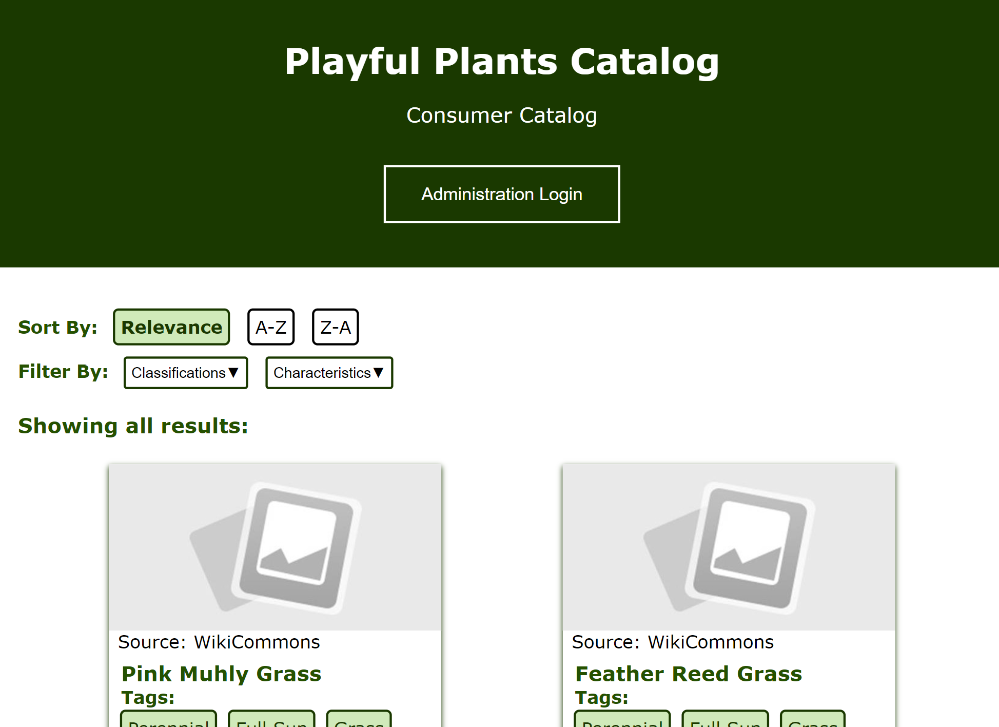
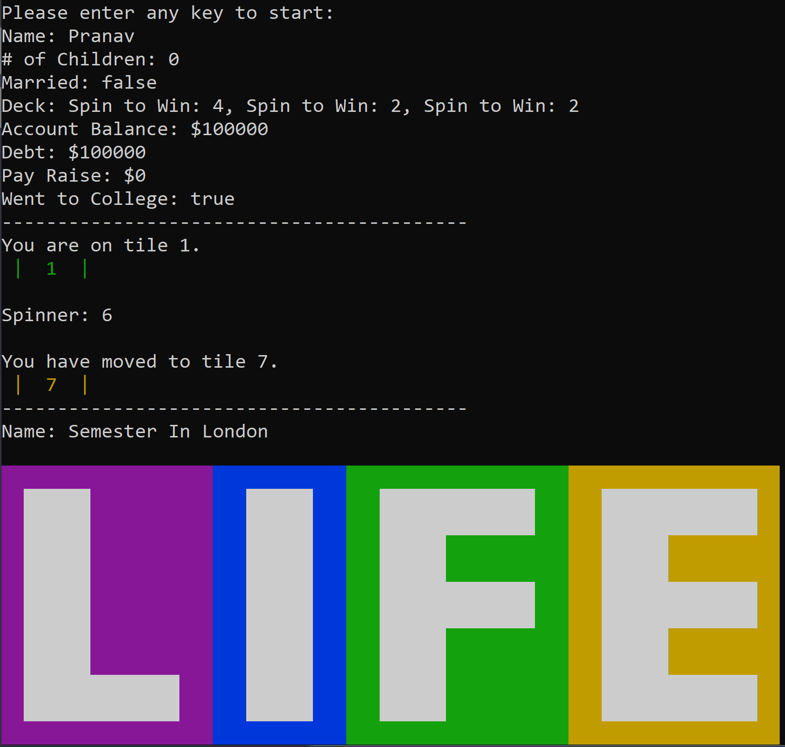

Projects
Build - A - Cache
April - May 2022
Built-A-Cache was my final project for my computer architecture class. For
this project, I worked with 2 other classmates to make a cache simulator which allowed users to vary the
cache size, cache line size, number of cores, and cache coherency protocol. The cache simulator allows users
to simulate caches using VI protocol and MSI protocol. We then used the simulator to create graphs which
were used to analyze the best configuration for a cache. One thing I learned was that generally increasing
block size decreases cache misses up to a certain critical point.
Playful Plants Media Catalog
February - May 2022

The Playful Plants Media Catalog is a consumer catalog built using PHP. This website was final
project for CS2300: Intermmediate Web Programming and I worked on it for 4 months. The catalog is backed by
a SQL database and administrator users are able to add, edit, and delete entries in the catalog. From this
project, I learned how dynamic websites are created and supported. I really enjoyed this project because I
got a lot of feedback on the design aspects and there was a lot of growth and progress to make the finishing
product.
Please click here to view my project
The Game of Life
August - December 2021
 I developed The Game of Life in a functional programming class. The main
language used was OCaml. I worked with 3 other team members to recreate the game. We spent all semester
working on this project and we decided to make the game in terminal. The instructions to the game would
print to the screen and players could take turns deciding where to go. I developed the main function that
ran the game recursively. I also did a lot of organizational work. From this project, I learned a lot about
working on a long-term project with a team. In this project, we mostly focused on learning the methods used
to implement a game using functional programming.